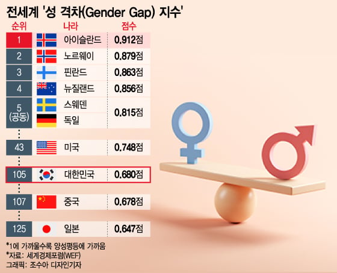
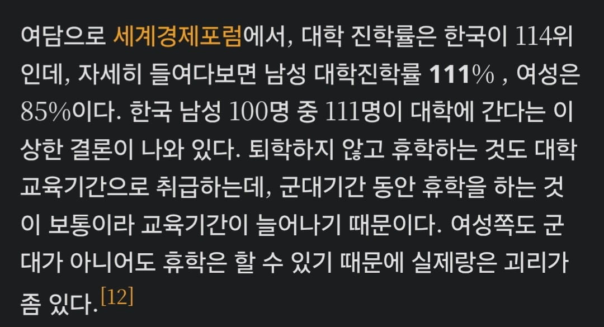

그쪽에서 좋아하는 성격차지수
이게 점수가 여성점수(진학률,사회진출률,임금등등)/남성점수 해서 1점 만점인데

한국은 군대 때문에 남성 진학률 111%의 기적이 있어서 점수가 낮게 나왔다. 여성도 군대를 가면 진학률이 높게 나와서 성격차지수 순위가 높아질것이다.

그쪽에서 좋아하는 성격차지수
이게 점수가 여성점수(진학률,사회진출률,임금등등)/남성점수 해서 1점 만점인데

한국은 군대 때문에 남성 진학률 111%의 기적이 있어서 점수가 낮게 나왔다. 여성도 군대를 가면 진학률이 높게 나와서 성격차지수 순위가 높아질것이다.
성평등은 여성과 남성이 동등한 대우를 받고있어야 이루어지는 것이기에 남성이 차별을 받고있어도 성평등 지수가 낮게나온다는걸 이해하지못하는 병신새끼들이 있습니다
아님 저 점수는 남자 조지면 그냥 올라가는 점수임 군대로 점수 낮아진건 진학률 계산을 병신같이해서 우연히 낮아졌을 뿐
성격차지수는 여성이 남성의 수치를 초과하거나 동률일 때 1점을 부여하는 방식임.
남성이 차별받으면 오히려 좋아 하면서 점수가 오르는 거라고 ㅋㅋ
성격차를 성평등으로 호도하는 너가 잘못 알고 있는 거임
난 저 주제 나오면 그냥 맞장구쳐준다. 설명해줘도 어차피 안바뀜.
저 내용 나오는것 자체가 설득을 원하는게 아니라 공감이랑 맞장구를 바라는거임
"와 정말요 여자가 우리나라가 인도보다 살기힘든 나라라니 정말 힘들겠어요 우리나라 여성분들"
하면 됨.
저거 병신통계로 유명해서
인용하는순간
존나 멍청하거나
의도가 있는걸로 해석됨ㅋㅋ
??? : 니나 처먹고
군대가 gun univ. 임? ㅋㅋ
저거 얘기하는 애들은 남성이 존나게 차별받고 점수 내려가는건 생각안하고 씨부리지
국방부는 성평등이 두렵습니까?
출산율도 올라 갈 듯 ㅋㅋ